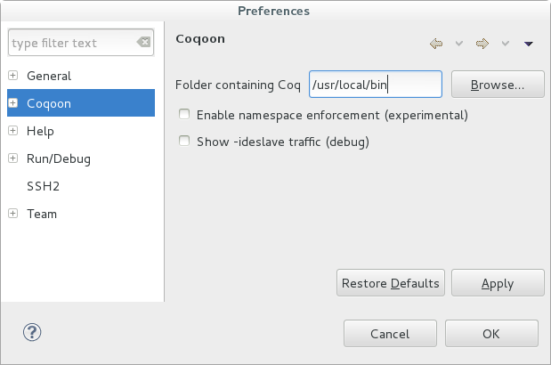

Coqoon is an Eclipse plugin providing a feature-complete development environment for Coq proof scripts.
Coqoon is developed alongside
Kopitiam,
an Eclipse plugin for certifying full functional
correctness of Java programs.
Coqoon works well with other Eclipse plugins — add more to add new features like version control.
Automatically rebuild dependencies when proof scripts change, and forget about manual load path configuration.
Structure Coq developments like Java
projects, manage project
interdependencies with a user
interface, and avoid cluttering source
folders with .vo files.
Coqoon projects can be built outside of Coqoon by using automatically-generated Makefiles.
In order to use Coqoon's PIDE support, you will need a development version of Coq, which you'll need to build separately. To get a suitable version of Coq, run the following commands:
git clone https://github.com/coq/coq.git
cd coq
git checkout 6e0c5c81e9e81c2e5369427643b2ac51b9aa17e6
The latest version of Coq is also likely to work, but these commands will fetch an earlier version we have tested.
Next, follow the usual installation instructions for Coq. (You will need to have OCaml available to build it.) If you wish to install this branch locally, run ./configure -local before running make.
Finally, to install the Coq plugin for PIDE, run the following commands (with the version of Coq you compiled earlier in your path):
git clone https://bitbucket.org/Carst/pidetop.git
cd pidetop
coq_makefile -f Make > Makefile
make
make install-toploop
See Carst Tankink's build instructions for more information.
Coqoon should work with any recent version of the Java virtual machine. See Oracle's Java downloads page.
Coqoon requires version 4.2 (Juno) or later of Eclipse, available from the Eclipse downloads page.
Coqoon is tested regularly on Windows, Mac OS X and Linux.
Coqoon (PIDE) - https://www.itu.dk/research/tomeso/coqoon/e42-pideinto the Work with: text box, and press Enter.
Coqoon will search some system folders for Coq, but if it can't find it—or if it finds an older version without PIDE support—you may need to manually specify the path to the coqtop program.
To specify the path, select the Window → Preferences (or Eclipse → Preferences on Mac OS X) menu option, choose the Coqoon category, and then click Browse to choose the correct folder. 
The default Eclipse user interface configuration does not show any Coq-specific views. To enable these, select the Window → Open Perspective → Other... menu option, choose Coq, and click OK.
We have modified a version of Benjamin Pierce's Software Foundations course to be compatible with the development version of Coq that Coqoon currently supports. The easiest way to obtain this project is to import it:
Coqoon's source code is hosted on GitHub, and can be checked out anonymously using the command
git clone git://github.com/hannesm/Kopitiam.git
Report bugs, issues and problems using the Coqoon issue tracker (which is shared with the Kopitiam project).
Coqoon is managed by Jesper Bengtson and developed by Alexander Faithfull (who also maintains this webpage), based on work by Hannes Mehnert.